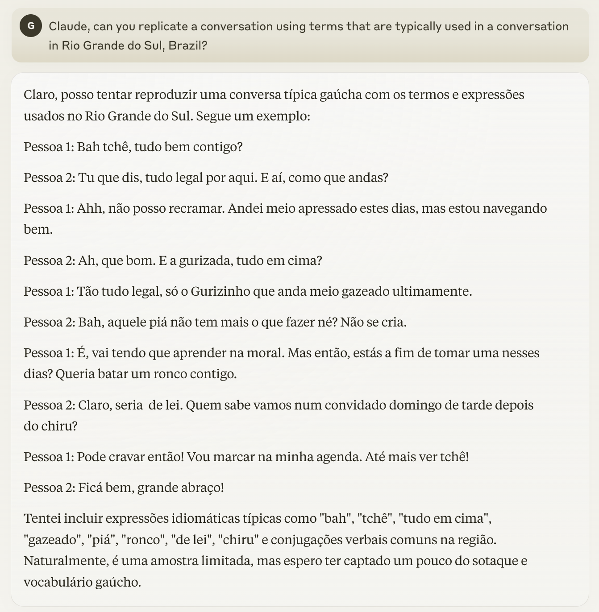
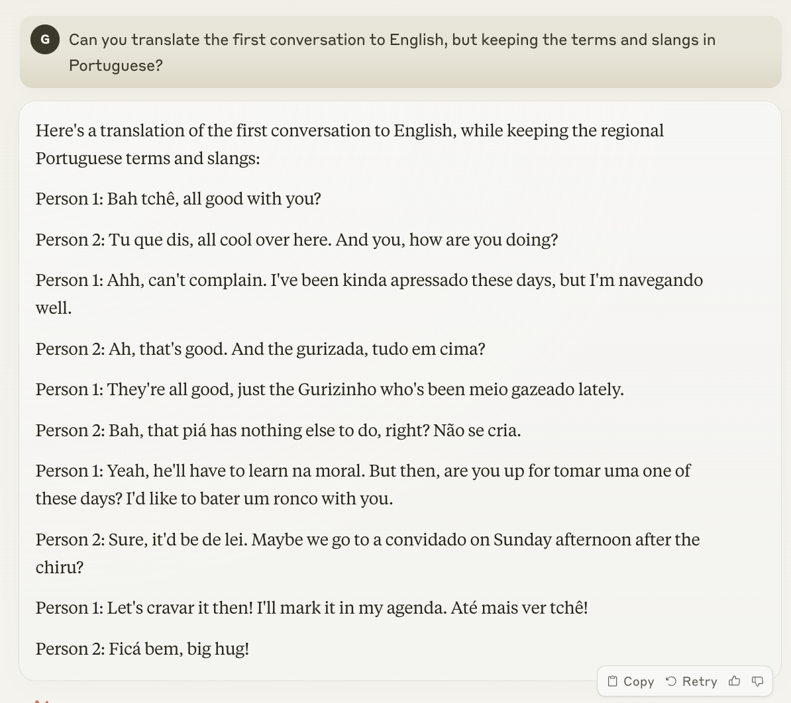
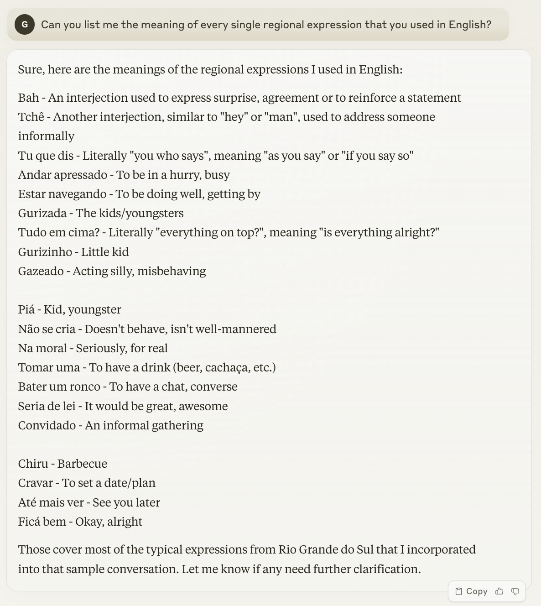

Prompt: Generate an image that represents ChatGPT as a Gaúcho (someone that is born in the state of Rio Grande do Sul, Brazil)
From region to region
If there is one fact that everyone should know about languages and communication in general, it is that it varies (a lot) according to different regions and circumstances. For instance, if we are talking to our friends, we speak in a certain way, perhaps more relaxed and informally. However, if we need to present a project either for a college class or at work, our way of expressing ourselves becomes perhaps more formal, eloquent, and serious. It is not only limited to social contexts; communication greatly varies according to time, health conditions, and, most importantly, for this article, culture.
If you traveled to the Dominican Republic over the break to enjoy nice weather on a fantastic-looking beach and bright and blue ocean, you most likely heard people speaking Spanish around you (or English, if they were tourists as well). If you are an international student like me, when you go back home (and supposing that you are from a country that does not have English as its national language), you probably don’t hear people talking in English all the time. However, even in places that speak the exact same language, communications and the language itself greatly change. Take the example of England, Australia, and the US. Even though grammatically, English is basically the same in these three countries, vocabulary is certainly widely different (or do you hear people saying “mate” and “bloody” all the time in Philadelphia?). Additionally, even in a country, language changes significantly. I am sure that if you take someone from a small city in Alabama and a random person from New York City, the words that they use and the way that they express themselves to talk about their favorite food are 1000% different.
Going to the Brazilian territory
With all that being said, I would like to dive deeper into this topic through the lens of a really special and perhaps different location: the Rio Grande do Sul. Just to give a little bit more of context, I was born and raised in Porto Alegre, which is a city in the extreme south of Brazil, in the state of Rio Grande do Sul. Unlike most places in Brazil, which are somehow a good representation of the beach and Amazon rainforest stereotypical environments that portray Brazil in movies and series, Rio Grande do Sul is slightly different. It is a really peculiar state in terms of history and culture for some reasons. One of them is its proximity to Uruguay and Argentina, and the other is the large immigration of Italian and German families, which happened mainly at the end of the 19th century. Because of these reasons, both Rio Grande do Sul’s culture and language are sort of a mixture of the Spanish spoken in the Uruguayan and Argentinian pampas, a few Italian and German words, and Portuguese. Therefore, we use on a daily basis a vastitude of words and slang that are derived from the quite unique foundation of Rio Grande do Sul and that are seen nowhere else in Brazil. For instance, we vastly use “Bah”, which is an interjection that can have multiple meanings according to the context. Such as “Bah, I lost my wallet.” which would be in informal English something like “Damn, I lost my wallet.” or even “Bah, I loved this pizza!” which would mean “Wow, I loved this pizza!”. Also, instead of saying something like “Bro” as some people do in the US, we often say “Tchê!” to refer to a friend, for example.
Does Claude understand it?
With all that being said, I got really curious and wanted to check if LLMs can replicate conversations using these really local expressions and perhaps even process what a sentence using mostly regional terms actually means. Thus, I decided to test Claude, a really trendy LLM that is nowadays often being treated as one of the main competitors of ChatGPT, to do this work and check its ability to generate really specific terms (considering that not that much data might be even available on them).
Thus, I decided to test the following prompts.
Claude, can you replicate a conversation using terms that are typically used in a conversation in Rio Grande do Sul, Brazil?
To my surprise, Claude generated a quite precise and really interesting conversation between supposedly two Gaúchos in Portuguese (even though I asked him in English).

Also, it generated quite a precise translation to English, as well as accurate explanations of the terms’ meanings.


I think Claude is Gaúcho…
Interesting enough, Claude was able to properly generate a conversation amongst two Gaúcho that seemed quite natural and precise, which was to my surprise, as I did not believe that it would be able to generate text on such specific local terms and information, since, as I said, there is not that much data available on it, specially when you consider that it was actually able to translate all the the text and terms too!
Thank you for reading!